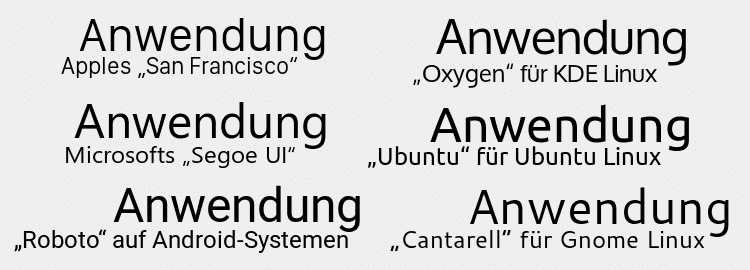

Auf dieser Website ist Platz für das, wofür mein Twitterprofil @charakterziffer nicht ausreicht. Mein Blog ist als Plus zu meinen Tweets gedacht, eben „@cz+“. // Die letzten drei Artikel:
Etwas nicht zu wissen kann peinlich sein, oder ein Zeichen von Schwäche. Wenn ich eine Wissenlücke geschickt umschiffe und notfalls ein bisschen bluffe, dann stehe ich immer noch gut da und erfahre manchmal sogar noch, was ich nicht wusste. Andererseits ist es ganz schön anstrengend, sich aufs Glatteis zu begeben.
Schön, wenn man jemanden kennt, der einen nicht auslacht oder die Augen verdreht, weil man gerade nicht so richtig Ahnung hat. Noch besser, wenn derjenige dann weiterhilft und vielleicht noch einen guten Rat in der Tasche hat. Oft bekommt man eine andere Perspektive oder einen neuen Anstoß, um weiterzumachen.
Wen fragt ihr um Rat, wenn ihr euch in einer Sache unsicher seid? Die Ballerina in meiner Twitterserie wendet sich vertrauensvoll an den Fuchs. Die letzten Tweets dieser Reihe:
⏱ „Wenn intensives Nachdenken nichts bringt, dann hilft Geduld“, sprach der #Fuchs zur Ballerina. „Warte ab und die Idee kommt von allein.“ (#)
⧉ „Sich selbst einzuschätzen ist schwer“, sprach der #Fuchs zur Ballerina. „Frag andere nach ihrer Meinung, das gibt dir eine Orientierung.“ (#)
𝈎 „Ich weiß, dass dein Opa dich toll findet“, sprach der #Fuchs zur Ballerina. „Kritik hilft dir aber nur, wenn sie wirklich ehrlich ist.“ (#)
✗ „Wer einen Fehler zugibt, sollte nicht bestraft werden“, sprach der #Fuchs zur Ballerina. „Besser du belohnst die Einsicht desjenigen.“ (#)
※ „Pass auf“, warnte der #Fuchs die Ballerina, „dass du mit einem überzogenen Anspruch an deine Arbeit nicht dein eigener Feind wirst.“ (#)
䷇ „Vergiss nicht: Eine Aufführung ist immer Team-Arbeit“, sprach der #Fuchs zur Ballerina. „Achte alle, die dich glänzen lassen.“ (#)
ⓧ „Klar, kannst du dich auf der Bühne ausziehen“, sprach der #Fuchs zur Ballerina. „Ist es für dich stimmig und fühlst du dich dabei wohl?“ (#)
(Dabei hat der Fuchs Anfang 2011 noch behauptet: „Mag sein, dass Kunst alles darf, das heißt aber nicht, dass sie alles machen muss. Bleib angezogen.“)
䷂ „Wenn man’s kann, ist es nicht schwierig“, sprach der #Fuchs zur Ballerina. „Doch sei nicht überheblich, auch du musstest es erst lernen.“ (#)
⁕ „Verschieb lieber etwas und nimm dir mehr Zeit“, sprach der #Fuchs zur Ballerina. „Besser als schusselige Arbeit, womöglich mit Fehlern.“ (#)
⛂ „Eine echte Schwäche wäre, Unwissenheit niemals einzugestehen“, sprach der #Fuchs zur Ballerina. (#)
Webfonts ermöglichen, den Text auf einer Internetseite in einer individuellen Schriftart darzustellen. Das nutzen Gestalter immer öfter, um auf Websites bereits durch die Typografie ein bestimmtes Erscheinungsbild zu vermitteln. Die geeignete Ladestrategie für Webfonts (engl.) stellt sicher, dass der Text trotzdem ohne merkliche Verzögerung auftaucht.
Doch wie vermutlich zu jedem Trend gibt es auch zu Webfonts eine Gegenbewegung. Statt eine individuelle Schrift zu wählen, möchten manche Webdesigner einen Text so gewohnt und standardmäßig wie möglich aussehen lassen. Sie versuchen, die gleiche Schrift zu wählen, die das Betriebssystem des Nutzers verwendet (zum Beispiel in Programm-Menüs, bei Systemmeldungen, im Datei-Manager etc.). So wirkt eine Website oder Web-Anwendung mehr wie ein lokal installiertes Programm.
Was ist die Systemschrift?
Und woher weiß ich, welche Schrift dem Nutzer in lokalen Programmen angezeigt wird? Nun, ich weiß es nicht, schließlich ist es in jedem Betriebssystem eine andere. Aber ich kann eine Reihenfolge typischer Systemschriften festlegen. Der Browser des Nutzers testet diese Liste durch. Er überspringt alle Schriften, die nicht installiert sind, und verwendet dann die erste Schrift, die beim Nutzer vorhanden ist. Wenn ich die Reihe vom Speziellen zum Allgemeinen sortiere, erwische ich mit hoher Wahrscheinlichkeit die Systemschrift meines Nutzers. Eine verbreitete Schriftliste (“Sytem Font Stack”) ist:
So oder ähnlich findet sich das in der Bedienoberfläche von Wordpress, im populären CSS-Framework Bootstrap, beim Reiseportal Booking.com oder auf der Website von GitHub. Überall dort verzichtet der Anbieter auf typografische Eigenständigkeit, um dem Nutzer lieber die vertraute Schrift seines Betriebssystems vorzusetzen. Entsprechend unterschiedlich sieht der Text dann je nach System aus:

Mal ist die Schrift ein wenig fetter, mal ein bisschen runder, vielleicht allgemein größer und die Buchstaben stehen enger zusammen oder weiter auseinander. Ganz wie es der Nutzer von seinem Betriebssystem kennt …? Nicht unbedingt.
Systemschrift garantiert?
Wer auf seinem Linux zum Beispiel Googles Schrift Roboto installiert hat, der bekommt diese angezeigt – und eben nicht die Standardschrift seines Betriebssystems. Apropos Roboto: Die wird von Google massiv als Erkennungszeichen genutzt, zum Beispiel auf YouTube, Google Maps oder in Google Mail. Möchte ich wirklich, dass meine Website von der Schrift her so aussieht wie ein Google-Produkt?
Auch wer bei seinem Betriebssystem die Schrift geändert hat (zum Beispiel seinen Mac lieber mit Fira Sans beschriftet), bekommt nicht die „native“ Systemschrift angezeigt. Das sollte in Zukunft aber der neue CSS-Wert system-ui; verhindern. Dieser Platzhalter steht immer für die Schrift, die das Betriebssystem tatsächlich verwendet. Damit würde der Nutzer wirklich genau die gewohnte Schrift sehen – womöglich ist das aber gar nicht, was der Designer beabsichtigt (engl.). Im Moment wird font-family: system-ui mittelgut unterstützt (je nach Nutzerschaft um die 70 bis 80 %), es funktioniert nicht im Firefox, Internet-Explorer und Microsoft Edge.
Man kann nicht nicht gestalten
Aber Moment! – und hier kommt der Meinungsteil dieses Blogartikels: Warum genau macht eigentlich jemand diese Verrenkungen? Warum die Schriftart des Systems nutzen? Um mir die Ladezeit einer Webschrift zu sparen? Dann könnte ich doch gleich eine bewusst ausgewählte websafe Schrift wählen, zum Beispiel Verdana, Arial, Georgia, Trebuchet oder Times New Roman. Die sind auf wirklich vielen Geräten installiert und werden dann angezeigt. Oder vielleicht, weil meine Website so aussehen soll wie ein installiertes Programm? Das könnte ich bei Web-Apps, also tatsächlichen Anwendungen noch verstehen – aber selbst hier kann man mit einer bewusst ausgewählten Schrift mehr erreichen.
Ich glaube, meistens wird dieser System Font Stack aus Unsicherheit und Feigheit gewählt. „Mmmh, wir brauchen was neutrales, das nicht stört oder unangenehm ist – nehmen wir doch die Schrift, die der Nutzer ständig sieht, die ist so natürlich und nativ.“ Nein, ist sie nicht. Alles ist Gestaltung, selbst wenn ich beschließe, etwas nicht besonders zu gestalten. Und wenn ich mir keine Gedanken darum mache und sicherheitshalber zu einem Standard-Design greife, dann habe ich meistens nicht die beste Lösung gefunden.
Was man mit System-Schriften dagegen in Kauf nimmt: Absätze brauchen unterschiedlich viel Platz, Text verschiebt sich, Zeilenabstände passen nicht optimal zur Schrift, Textgrößen sind nicht richtig aneinander angepasst, die eigens gestaltete Unterstreichung sitzt zu hoch und das allgemeine Schriftbild kann auf manchen Systemen eine unpassende Wirkung haben. Manchmal sind auch die gewünschten Strichstärken nicht vorhanden und werden vom Browser schlecht imitiert (z. B. haben nur San Francisco und Segoe eine halbfette Semibold). Wer gute Typografie machen möchte, ist mit einer einschätzbaren, zum Inhalt passenden Schrift besser bedient.
Der neue Standard?
Im Moment sind die Default-Schriften im Browser meistens Arial/Helvetica, Times (New Roman) und Courier (New). Sie erscheinen, wenn der Gestalter nur die generischen Schriftkategorien sans-serif, serif oder monospaced angibt. Vielleicht ändert sich das irgendwann und die Browserhersteller legen system-ui als Standard-Schrift fest (ohne Serifen). So stellt es sich Sindre Sorhus im Fehlerbericht zu seinem normalize.css (engl.) vor. Ich muss einräumen, dass das in den meisten Fällen eine Verbesserung wäre – aber halt nicht automatisch eine gute oder irgendwie „natürliche“ Gestaltung für einzelne Websites.
Ich behaupte nicht, dass eine Internetseite auf allen Geräten gleich aussehen muss; aber ich bin überzeugt, dass man bewusst gestalten sollte. Als scheinbar einfache Lösung verhindert der System Font Stack, sich tatsächlich mit einem angemessenen Design auseinanderzusetzen. Die Standardeinstellung kann ein möglicher Anfangspunkt einer Gestaltung sein, aber nur in seltensten Fällen auch deren Ende.
Es war einmal eine Prinzessin, die war schön wie eine Mandelblüte im Morgentau. Sie hatte quellblaue Augen und einen für ihr zartes Alter viel zu sinnlichen Mund. Reihenweise liefen ihr die Männer hinterher und sicherlich hätte sie sich zur Freude ihres Vaters schon bald fest gebunden, hätte sie nicht einen erschreckenden Makel: Ihr Lachen.
Die Prinzessin war eine so zarte Dame, dass ihr jeder Bewerber allerhöchstens ein sektperlendes Kichern zugetraut hätte, wenn er ihr eine Vergnüglichkeit ins Ohr flüsterte. Dem aber war nicht so, ganz im Gegenteil. Deshalb versuchte die Prinzessin bei den verspielten Flirts stets eine hartnäckige Melancholie zu kultivieren, was ihr bei den intelligenten und reizenden Männern jedoch nicht für lange Zeit gelang. So brach es nach spätestens fünf Minuten in einem espritgeladenen Gespräch aus ihr heraus, das Lachen.
Und nicht das du denkst, unsere Prinzessin würde einfach nur laut aufkreischen, nein. Viel schlimmer: Ihre sonst liebliche Stimme klirrte spröde durch sämtliche Dissonanzen der abendländischen Tonleitern, steigerte sich in bedrohliche Lautstärken, die selbst einer verfluchten Furie die Mitleidstränen in die Augen getrieben hätten. Gar schrecklich schwangen sich die erheiterten Laute der Prinzessin zu einer schrägen Arie eines ganzen verdammt verstimmten Sinfonieorchesters.
Als wäre das nicht genug gewesen! Zudem aber verzog das grauenhafte Lachen der schönen Prinzessin dermaßen das Gesicht, dass es einer ägyptischen Mumie gleich kam. Der Mund riss auf wie in Höllenqualen, die Augen stachen hervor, die Wangen legten sich in verschrumpelte Falten und das Gebiss schien einem Werwolf gleich nach Blut geifernd.
Doch in dem Moment, als dem gegenübersitzenden Jüngling aufgrund der hässlichen Fratze der Schock in sämtliche Glieder gefahren war, war es schon wieder vorbei und die herzensgute Prinzessin legte beschämt und zum Zerfließen traurig die Hände in den Schoß, beugte den Kopf und wartete leise schluchzend, bis der zitternde Junker verstohlen den Raum verließ. Dann weinte die Prinzessin hauchzart und leise, und ihr Schluchzen mochte einem Unwissenden wie der heilige Gesang der himmlischen Heerscharen am Weihnachtstag dünken.
So klang es nun oft aus dem hinteren Bogenfenster an der Westmauer: Erst schrecklich kreischend und trommelfellspaltend, danach harfensanft und lauschig weich. Und mit der Zeit klang es nur noch lauschig sanft und unendlich betrübt, denn die Kunde von der lachenden Prinzessin verbreitete sich weit über die Landesgrenzen hinaus und verschreckte jeden potenziellen Freier.
Eines Tages hielt es die Prinzessin nicht mehr aus und kletterte engelsgleich heulend auf den schmalen Sims ihres Fensters. Gut siebzehn Meter ging es da nach unten, in einen dornigen Burggraben, in dem Glasbruch und spitze Granitsplitter einem feindlich gesinnten Heer eine unüberwindliche Grenze boten. Gerade als die mandelfeine Prinzessin ihrem lächerlichen Leben ein Ende setzen wollte, kam eine pechschwarze Krähe vorbeigeflogen und setzte sich auf den nahen Buchenbaum. »Prinzessinnen können nicht fliegen«, krächzte der Unglücksvogel.
»Lieber guter Vogel, das weiß ich. Ich will mich auch gar nicht in die Lüfte erheben wie du, mit deinen glänzenden Federn. Ich will fallen.«
»Fallen willst du? Da hinunter? Du bist eine Prinzessin und wirst dir sämtliche Knochen brechen.«
»Ich hoffe es«, antwortete die Schöne und eine diamantene Träne suchte sich den Weg aus ihrem Augenwinkel die Wange hinab, sich am Jochbein aus dem Gesicht lösend und stürzte hinunter um unten in einer Distelblüte zu zerschellen. Die Prinzessin sah ihre Träne sterben und begann der Krähe leise ihr Leid zu klagen.
Die Krähe hörte aufmerksam zu und antwortete: »Das ist leicht. Höre, denn auch ich habe eine gar furchtbare Stimme und kenne deine Sorge. Steig wieder hinein in dein Zimmer und warte sieben Tage, ich werde versuchen dir zu helfen. Wenn du nach Ablauf dieser Frist nicht der glücklichste Mensch dieser Erde sein solltest, dann darfst du dich gerne in den Burggraben stürzen.«
So verabschiedete die Prinzessin den schwarzen Vogel und verbrachte die kommende Woche mit neuer Hoffnung. Sie heulte viel weniger und gelegentlich vernahm ein aufmerksamer Bediensteter von Zeit zu Zeit sogar ein belustigtes Kreischen.
Die sieben Tage gingen dahin und am Abend des letzten war die Mandelprinzessin betrübter als je zuvor. Keine Nachricht von der Krähe, keine Rettung, keine Hoffnung. Sie öffnete erneut ihr Bogenfenster und setzte bereits einen ihrer hellblauen Stöckelschuhe auf den Sims, als eine Trompete die Ankunft eines Gastes verkündete. Neugierig stieg die Prinzessin wieder herab und begab sich in die Empfangshalle, wo sie ein bildschöner Jüngling in einem pechschwarzen Umhang erwartete.
Er hatte haselnussbraune, sehr kurze Haare, trug einen französisch anmutenden Bart und in seinen dunklen Augen lag ein unbestimmter Glanz wie vom Grund eines Ziehbrunnens. »Ihr seid die Mandelprinzessin? Man nennt mich Johann, den Unglücklichen. Ich möchte um Eure Freundschaft bitten.«
Die Prinzessin blickte den Schönen skeptisch an und fragte zurück: »Wie kommt Ihr darauf, ich sei Euch für eine Freundschaft geeignet?«
»Ihr werdet es nicht glauben, doch eine Krähe hat mir von Euch berichtet. Außerdem seid Ihr nicht vergeben und mindestens so außergewöhnlich hübsch und klug wie ich selbst.«
Ob des vermessenen Witzes konnte die Prinzessin nicht anders und ein heftiges Schmunzeln verzog ihr Gesicht. Auch entrang sich ihrer Kehle ein splitternder Laut, wenn auch nur sehr kurz. Da bekam Johann der Unglückliche ungläubige Augen und blickte die Prinzessin erwartungsvoll an. Diese jedoch begann sich auf der Stelle zu schämen, drehte sich um und rannte die Treppen hinauf, um endgültig aus ihrem Bogenfenster zu springen.
Johann zögerte nur einen kurzen Moment, dann eilte er dem Mandelmädchen nach, bekam sie noch in ihrem Zimmer am Fußknöchel zu fassen, warf sie zu Boden und fiel gleich über sie. Er sah das verschreckte Fräulein an, wie sie ihn aus Rehaugen anschaute.
Da konnte Johann nicht anders und ein heftiges Schmunzeln verzog sein Gesicht. Auch entrang sich seiner Kehle ein splitternder Laut, wenn auch nur kurz.
Unten im Empfangssaal fuhr ein Küchenjunge zu Tode erschrocken zusammen, ließ zweiundzwanzig Stücke des königlichen Porzellans zu Bruch fallen und hatte das Gefühl, innerlich zu zerspringen. So unerhört grauenhaft war das berstende Schreien, das aus dem Zimmer der Prinzessin kam. Dort auf dem Teppich lagen zwei junge Menschen mit fratzenhaften Angesichtern, dämonengleich, und gaben reißende, spröde brechende, quälend ziselierte Laute von sich und doch lachten sie einfach nur gemeinsam.
So, und wie das im Märchen nun mal üblich ist, heirateten die beiden natürlich. Sie wohnen in einer kleinen Hütte abgelegen im Wald und betreiben Zwiebelanbau. Und wenn sie nicht gestorben sind, dann traut sich immer noch keiner in ihre Nähe, denn seit ihres Zusammentreffens gab es tagsüber nicht eine einzige Stunde, in der sie nicht gemeinsam genüsslich gekreischt hätten.
Das Wort kombiniert Persönlichkeit (Charakter) mit Sachlichem (Ziffer). Zusammengesetzt ergibt sich ein Synonym für Mediävalziffer, eine Zahlenvariante mit Ober- und Unterlängen.
Schriftarten dieses Blogs
Wenn dein Browser eingebettete Schriften (WOFF/WOFF2) unterstützt, dann liest du die Fließtexte hier in der Source Sans Pro von Paul D. Hunt, erschienen 2012 bei Adobe.
Die Überschriften sind aus der czSlab gesetzt, die ich für dieses Blog gestaltet habe. Sie orientiert sich an Yanones viel ausgefeilterer Antithesis von 2014.
§ 1 Dieses Blog verlinkt auf Websites Dritter („externe Links“). Zum Zeitpunkt der erstmaligen Verlinkung waren dort keine Rechtsverstöße ersichtlich. Da ich keinen Einfluss auf fremde Websites habe, kann ich für deren Inhalte und Gestaltung keine Haftung übernehmen. Sollte ich von Rechtsverstößen erfahren, entferne ich die Verlinkung unverzüglich. Eine ständige Kontrolle der externen Links ist ohne konkrete Hinweise aber nicht zumutbar.
§ 2 Datenschutzerklärung · Mir ist der Schutz deiner Daten sehr wichtig. Deshalb verzichte ich auf Cookies, vermeide möglichst Dienste von Drittanbietern und erhebe ich so wenige Daten wie es geht. Diese Website kann ohne die Angabe persönlicher Daten genutzt werden. Drei Ausnahmen:
§ 2a Wenn du einen Kommentar schreibst, bekomme ich die eingegebenen Daten und eine Zeitangabe per (prinzipiell unsicherer) E-Mail zugestellt. Falls dein Kommentar sachlich zur Diskussion beiträgt, veröffentliche ich deine Angaben direkt unter dem entsprechenden Artikel. Alle Eingaben (Name, Website, E-Mail-Adresse, Kommentar) sind freiwillig, auch anonyme Kommentare sind möglich.
§ 2b Mich interessiert, ob mein Blog überhaupt gelesen wird. Darum nutze ich den Besucherzähler von Onlex. Er speichert temporär die IP-Adresse des letzten Besuchers und den Zeitpunkt, ansonsten nur die Anzahl der Besucher.
§ 2c Im Artikel Verschlüsselte Mails habe ich ein Vimeo-Video eingebunden, bei Podcasts als Informationsquelle eine mp3-Datei von Podigee. Beim Abruf dieser Medien erheben die Drittanbieter eventuell Daten (IP-Adresse, Browser-Typ, Referrer, verwendetes Betriebssystem, Zeitpunkt) und speichern sie. Ich verweise hierzu auf die Datenschutzerklärungen von Vimeo und Podigee.
§ 3 Die Verwendung meiner Kontaktdaten zur gewerblichen Werbung ist ausdrücklich nicht erwünscht; ich widerspreche hiermit jeder kommerziellen Verwendung und Weitergabe meiner Daten. // Private Fanpost ist allerdings sehr willkommen!
 @charak
@charak